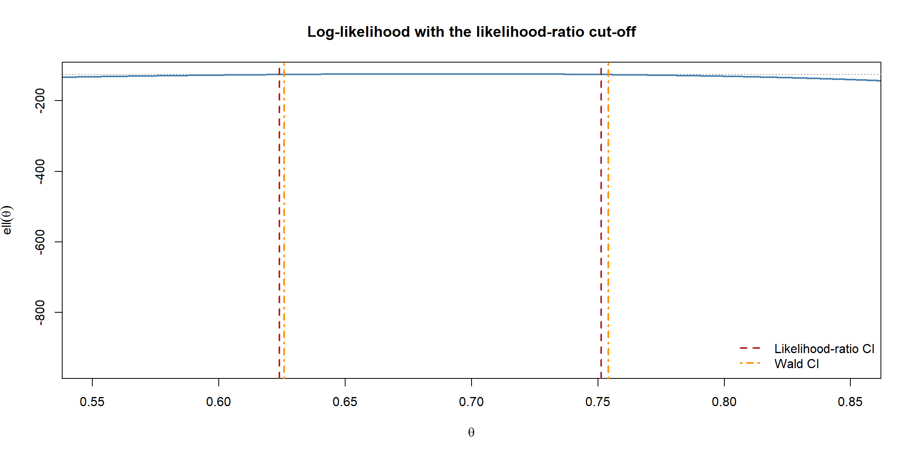

flowchart LR MLE["MLE θ̂"] --> AN["Asymptotic normality<br/>θ̂ ≈ N(θ, 1/I(θ))"] AN --> W["Wald interval<br/>θ̂ ± 1.96·se"] AN --> LR["Likelihood-ratio interval<br/>invert 2[ℓ(θ̂) − ℓ(θ)]"]
Asymptotics and Confidence Intervals
The previous page ended with a powerful claim: for large samples, the MLE is approximately normal, \[ \hat{\theta} \;\overset{\text{approx.}}{\sim}\; \mathcal{N}\!\left(\theta,\; \tfrac{1}{I(\theta)}\right). \] That single result is what lets us turn a point estimate into a confidence interval. But notice the words “approximately” and “for large samples” — this is asymptotic theory, holding only in the limit as the sample size grows. This page explains the asymptotic results and uses them to construct confidence intervals. The next page shows what to do when these formulas run out and we must turn to simulation instead.
Why asymptotics?
For most models, the exact distribution of \(\hat{\theta}\) in a finite sample is unknown or hopelessly complicated. Asymptotic theory rescues us by describing what happens as the sample size \(n \to \infty\). Three results matter.
Consistency
The MLE converges to the truth as data accumulates: \[ \hat{\theta} \xrightarrow{\;p\;} \theta \qquad \text{as } n \to \infty. \] With enough data, the estimate lands on the true value. This is the bare-minimum guarantee we want from any estimator.
NoteIn a nutshell: the two arrows
These pages use two kinds of limit arrow. \(\xrightarrow{\;p\;}\) (“converges in probability”) means the estimate gets arbitrarily close to a fixed number as \(n\) grows — here, the truth \(\theta\). \(\xrightarrow{\;d\;}\) (“converges in distribution”) is weaker: the quantity stays random, but its whole distribution settles into a fixed shape — below, a normal. Roughly: \(\xrightarrow{p}\) pins down a value, \(\xrightarrow{d}\) pins down a distribution.
Asymptotic normality
Suitably scaled, the estimation error is normally distributed in the limit: \[ \sqrt{n}\,(\hat{\theta} - \theta) \xrightarrow{\;d\;} \mathcal{N}\!\left(0,\; \tfrac{1}{i(\theta)}\right), \] where \(i(\theta)\) is the Fisher information from a single observation and \(I(\theta) = n\,i(\theta)\) is the total. Rearranged for practical use: \[ \hat{\theta} \;\overset{\text{approx.}}{\sim}\; \mathcal{N}\!\left(\theta,\; \tfrac{1}{I(\theta)}\right). \]
NoteIn a nutshell: little i vs big I
Watch the case carefully — they are different quantities. Lowercase \(i(\theta)\) is the information from one observation; uppercase \(I(\theta) = n\,i(\theta)\) is the information from all \(n\) observations stacked together. The lowercase version appears here because the \(\sqrt{n}\) scaling pulls out the per-observation amount; everywhere else in this section we use the total, big \(I\).
NoteWhere the normal comes from
This is the Central Limit Theorem in disguise. The score is a sum of independent contributions, one per observation, so it is asymptotically normal — and the MLE inherits that normality. This is why the normal distribution appears everywhere in frequentist inference, even when the data itself is not normal.
Efficiency
Among all reasonable (asymptotically unbiased) estimators, the MLE achieves the smallest possible variance in the limit — the Cramér–Rao lower bound, \(1/I(\theta)\). You cannot do better asymptotically, which is the deep reason maximum likelihood is the default tool.
NoteIn a nutshell: the Cramér–Rao lower bound
The Cramér–Rao lower bound is a speed limit on precision: no unbiased estimator can have a variance below \(1/I(\theta)\), no matter how clever it is. What makes the MLE special is that it reaches this floor asymptotically — it is as precise as any unbiased estimator is allowed to be.
WarningAsymptotic means approximate
These results hold as \(n\to\infty\). In a small sample they may be poor: a Wald interval can stray outside a parameter’s natural range (e.g. a probability below 0) or have the wrong coverage. When \(n\) is small or the model is awkward, the simulation methods on the next page are often more trustworthy — and they let you check whether the asymptotics can be trusted at all.
Constructing confidence intervals
A 95% confidence interval is a procedure that, on repeated sampling, contains the true \(\theta\) about 95% of the time (the frequentist interpretation from the intro page). There are two standard ways to build one from the likelihood.
The Wald interval
This is the direct consequence of asymptotic normality. Using the standard error \(\operatorname{se}(\hat{\theta}) = 1/\sqrt{I(\hat{\theta})}\): \[ \boxed{\,\hat{\theta} \;\pm\; z_{1-\alpha/2}\,\operatorname{se}(\hat{\theta})\,} \qquad \hat{\theta} \pm 1.96\,\operatorname{se}(\hat{\theta}) \text{ for } 95\%. \]
Pros: trivial to compute — just an estimate and its standard error. Cons: it assumes the log-likelihood is symmetric (parabolic) around the peak, which fails for skewed likelihoods and small samples.
The likelihood-ratio interval
A more accurate interval uses the shape of the log-likelihood directly rather than assuming it is a parabola. The likelihood-ratio statistic \[ W(\theta) = 2\big[\,\ell(\hat{\theta}) - \ell(\theta)\,\big] \] is asymptotically \(\chi^2_1\). Inverting it gives the interval of all \(\theta\) not rejected at level \(\alpha\): \[ \boxed{\,\big\{\,\theta : 2[\ell(\hat{\theta}) - \ell(\theta)] \le \chi^2_{1,\,1-\alpha}\,\big\}\,} \] where \(\chi^2_{1,\,0.95} \approx 3.84\). This interval respects the likelihood’s true (possibly asymmetric) shape and stays within the parameter’s natural range, so it is generally preferred when it is feasible to compute.
Why a chi-squared, and why “invert” it?
Two questions deserve a proper answer: why does the \(\chi^2\) distribution appear at all, and what does “inverting” the statistic mean?
Why \(\chi^2_1\) — Wilks’ theorem. Expand the log-likelihood with a Taylor series around its peak \(\hat\theta\). The first-derivative term vanishes (the score is zero at the MLE), so the leading term is quadratic: \[ \ell(\theta) \approx \ell(\hat\theta) - \tfrac{1}{2}\,I(\hat\theta)\,(\theta - \hat\theta)^2. \] Substituting this into the likelihood-ratio statistic gives \[ W(\theta) = 2\big[\ell(\hat\theta) - \ell(\theta)\big] \approx I(\hat\theta)\,(\hat\theta - \theta)^2 = \left(\frac{\hat\theta - \theta}{\operatorname{se}(\hat\theta)}\right)^2. \] The bracket on the right is, by asymptotic normality, a standard normal \(Z\). And a squared standard normal is by definition a chi-squared with one degree of freedom: \(Z^2 \sim \chi^2_1\). That is the whole reason the \(\chi^2_1\) appears — it is the squared version of the same normal that powered the Wald interval. (This result, that \(2[\ell(\hat\theta)-\ell(\theta)] \to \chi^2_1\), is Wilks’ theorem; the single degree of freedom counts the one parameter being constrained.)
NoteWald and likelihood-ratio are the same thing, to first order
The Taylor expansion above shows the Wald and likelihood-ratio intervals agree exactly when the log-likelihood is truly parabolic. They differ only by the higher-order terms the expansion drops — which is precisely the asymmetry of the real likelihood. So the LR interval is “the Wald idea, but using the genuine curve instead of its parabolic approximation.” This is why they nearly coincide at large \(n\) but the LR interval is more faithful when the likelihood is skewed.
Why “invert”. A hypothesis test fixes a candidate value \(\theta_0\) and asks “is the data compatible with it?” — we reject \(\theta_0\) when \(W(\theta_0) > \chi^2_{1,\,0.95} \approx 3.84\). A confidence interval turns this around: it is the set of all candidate values we would not reject. Inverting the test means sweeping \(\theta_0\) across its whole range and collecting every value that survives: \[ \text{CI} = \{\theta : W(\theta) \le 3.84\}. \] The duality “confidence interval = the values a test does not reject” is general and powerful — it is exactly what the worked example below does numerically, scanning a grid of \(\theta\) and keeping those under the cut-off.
flowchart LR W["Wald CI<br/>θ̂ ± 1.96·se"] --> W2["Fast, simple<br/>assumes a symmetric<br/>(parabolic) likelihood"] L["Likelihood-ratio CI<br/>invert 2[ℓ(θ̂) − ℓ(θ)]"] --> L2["Uses the true likelihood shape<br/>respects parameter ranges<br/>more accurate in small samples"]
Worked example: the two intervals side by side
We reuse the Bernoulli/coin-flip model from the likelihood page, where everything is in closed form: the MLE is \(\hat{\theta} = k/n\) and the information is \(I(\theta) = n/[\theta(1-\theta)]\).
Code
```{r}
#| warning: false
#| message: false
set.seed(1)
# Simulate coin flips with a true (but "unknown") bias
trueTheta <- 0.7
n <- 200
flips <- rbinom(n, size = 1, prob = trueTheta)
k <- sum(flips)
# Closed-form MLE, information, standard error
mle <- k / n
info <- n / (mle * (1 - mle))
se <- 1 / sqrt(info)
# Wald 95% confidence interval
waldCI <- mle + c(-1, 1) * 1.96 * se
list(mle = mle, se = se, waldCI = waldCI)
```$mle
[1] 0.69
$se
[1] 0.03270321
$waldCI
[1] 0.6259017 0.7540983Now the likelihood-ratio interval, found by inverting \(W(\theta)\) numerically, and a comparison:
Code
```{r}
ll <- function(theta) k * log(theta) + (n - k) * log(1 - theta)
# All theta whose log-likelihood is within 3.84/2 of the maximum
grid <- seq(0.001, 0.999, length.out = 5000)
W <- 2 * (ll(mle) - ll(grid))
inInterval <- grid[W <= qchisq(0.95, df = 1)]
lrCI <- range(inInterval)
rbind(Wald = waldCI, LikelihoodRatio = lrCI)
``` [,1] [,2]
Wald 0.6259017 0.7540983
LikelihoodRatio 0.6238766 0.7512468Here the two intervals nearly coincide, because \(n = 200\) is large and the likelihood is close to symmetric — exactly the regime where asymptotics work well. We can see this by plotting the log-likelihood with the likelihood-ratio cut-off: the curve is almost a parabola, so the symmetric Wald approximation barely differs.
Code
```{r}
#| fig-align: center
plot(grid, ll(grid), type = "l", lwd = 2, col = "steelblue",
xlab = expression(theta), ylab = expression(ell(theta)),
main = "Log-likelihood with the likelihood-ratio cut-off",
xlim = c(0.55, 0.85))
# Horizontal line at ell(mle) - 3.84/2 defines the LR interval
cutoff <- ll(mle) - qchisq(0.95, 1) / 2
abline(h = cutoff, col = "grey50", lty = 3)
abline(v = lrCI, col = "firebrick", lwd = 2, lty = 2)
abline(v = waldCI, col = "darkorange", lwd = 2, lty = 4)
legend("bottomright", bty = "n", lwd = 2, lty = c(2, 4),
col = c("firebrick", "darkorange"),
legend = c("Likelihood-ratio CI", "Wald CI"))
```
TipGoing further 🚀
On a real fitted model you get both intervals for free, and can watch them disagree. For a glm, confint() inverts the profile likelihood (the accurate, possibly asymmetric interval), while confint.default() returns the Wald interval (\(\hat\theta \pm 1.96\,\operatorname{se}\)):
Code
```{r}
#| eval: false
fit <- glm(cbind(k, n - k) ~ 1, family = binomial)
confint(fit) # profile-likelihood interval (needs the MASS package)
confint.default(fit) # Wald interval
```The two coincide when the log-likelihood is near-parabolic and drift apart as it skews — exactly the Wald-vs-likelihood-ratio contrast above, now done for you by R.
When the formulas run out
Everything above relied on the model being tractable — a closed-form information, a known sampling distribution, a likelihood we can differentiate. That is the exception, not the rule. The moment the MLE has no closed form, or we care about a complicated function of the parameters whose distribution we cannot write down, these neat formulas stop applying.
That is the subject of the next page: how to replace pen-and-paper asymptotics with simulation in R, and how to use simulation to check whether the asymptotic intervals on this page can actually be trusted for your sample size.
Summary
| Concept | Result | Use |
|---|---|---|
| Consistency | \(\hat\theta \to \theta\) | The estimate is reliable for large \(n\) |
| Asymptotic normality | \(\hat\theta \approx \mathcal N(\theta, 1/I)\) | Justifies the Wald interval |
| Efficiency | variance \(\to 1/I(\theta)\) | MLE is asymptotically best possible |
| Wald CI | \(\hat\theta \pm 1.96\,\operatorname{se}\) | Fast, assumes a symmetric likelihood |
| Likelihood-ratio CI | invert \(2[\ell(\hat\theta)-\ell(\theta)]\) | Accurate, respects the likelihood shape |